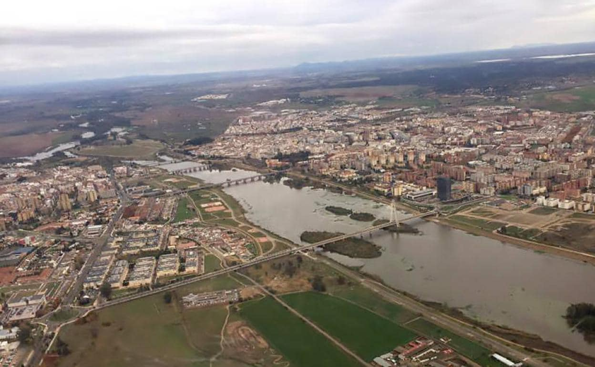

Badajoz es una ciudad llena de historia, cultura y tradiciones. Situada en la región de Extremadura, es conocida por su Alcazaba, su gastronomía y su cálida hospitalidad. Además, Badajoz es un importante centro cultural y económico en la región. Su casco antiguo está lleno de plazas históricas, como la Plaza Alta, y monumentos únicos. La ciudad también destaca por su activa vida cultural, con festivales como el Carnaval de Badajoz, que atrae a visitantes de toda España. Disfruta de su deliciosa gastronomía, incluyendo platos como la caldereta extremeña y el jamón ibérico de bellota.
